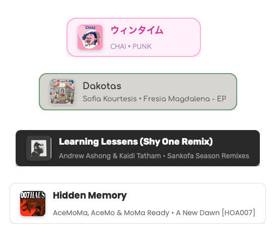

JAM DECK
Apple Music Stream Now Playing Widget for OBS (macOS/Apple Music only)
Python
HTML
CSS
JavaScript
Apple Music
AppleScript

OBS BROWSER SOURCES & STREAMING TOOLS
Free and open source streaming tools designed for maximum customizability and platform independence. Refresh your browser source to get the latest updates.

Apple Music Stream Now Playing Widget for OBS (macOS/Apple Music only)
Chat Overlay for Twitch and OBS featuring an AI-powered custom theme generator

Customizable clock overlay for OBS streams and recordings

Collection of static browser overlays for OBS, regularly updated with new components
Notification system to alert when you go live on Twitch, with Discord integration